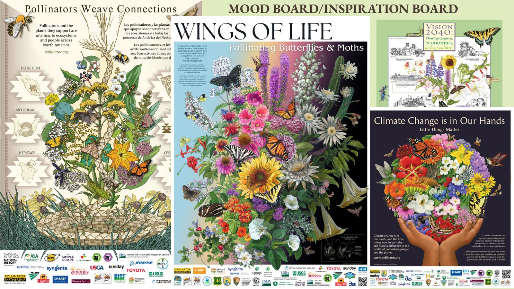
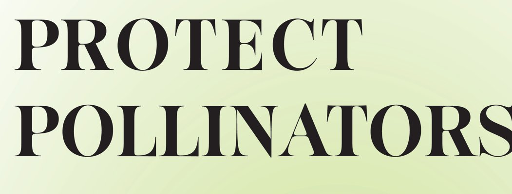
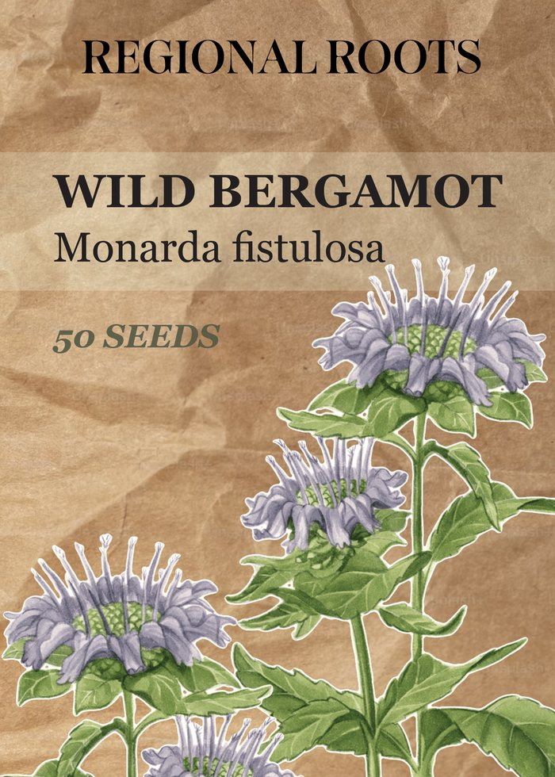
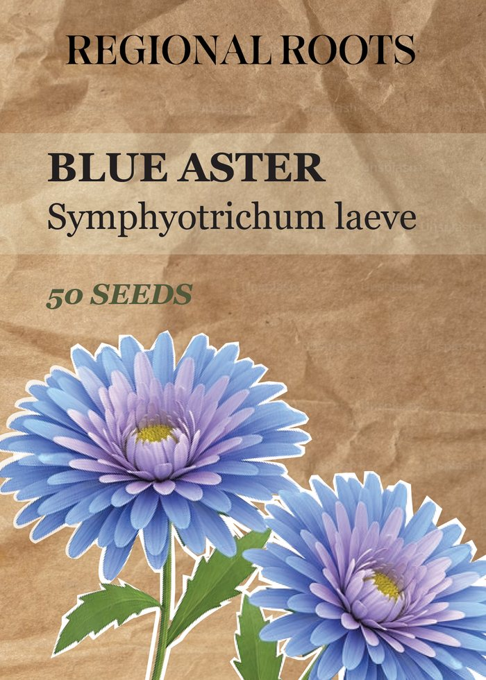
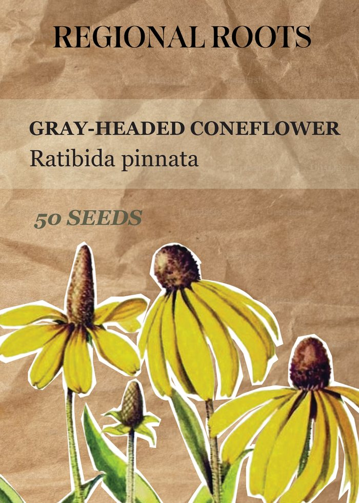
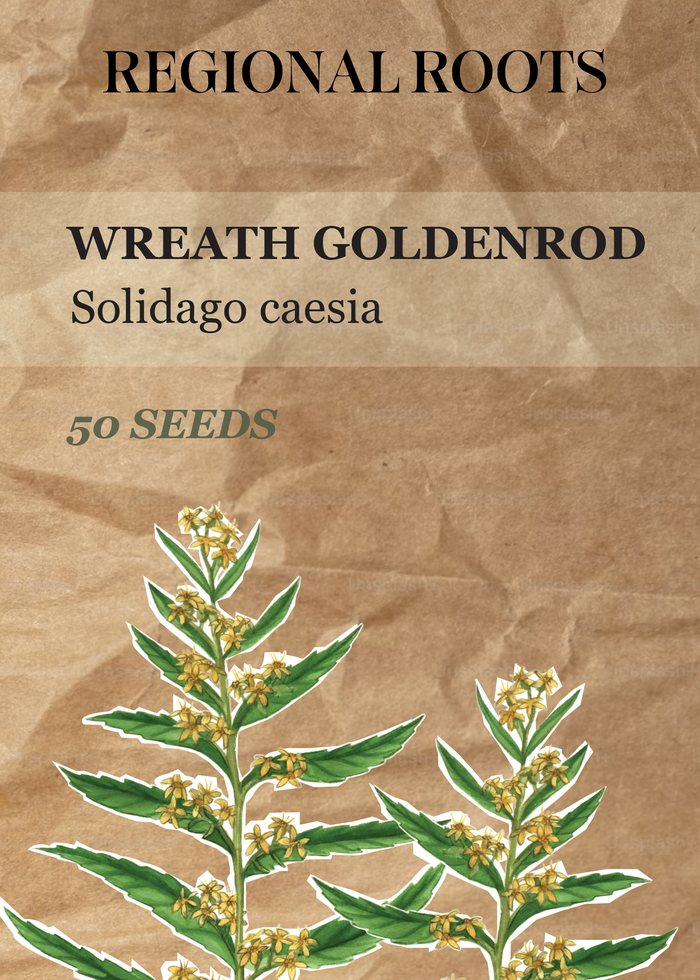

A campaign to help communities plant native and protect pollinators.
Role
Graphic Designer
Timeline
Summer 2026
Tools
InDesign Photoshop Procreate
Overview
Protect Pollinators is a three-part awareness campaign that encourages communities to plant native and support the bees and butterflies their ecosystems depend on.
3print, packaging & social
4native Northeast flowers
22%of native pollinators at risk
Created for ARTG 3452, the campaign pairs an informational poster with a line of Regional Roots seed packets and an Instagram carousel. Each piece leads to the next: learn why pollinators matter, then plant something that helps.
The problem
Pollinator populations are declining, and most people don't know how simple it is to help.
Habitat loss, pesticide use and suburban development are shrinking pollinator populations. Many people are unaware of how pollinators contribute to the ecosystem and to food production, or how small actions, like choosing native plants, can protect them.
Audience
Young adults, students, suburban residents and environmentally conscious community members who want to make a difference close to home.
Strategy
One message across three formats, each with its own job.
2D · PrintPoster
Eye-catching and informational: introduce native flowers and why they matter.
3D · PackagingSeed packets
A branded product that turns awareness into action, with cardboard tones and a paper texture.
Screen · SocialCarousel
An engaging Instagram post that ties every deliverable together and points to the seeds.
Inspiration
Botanical posters from the Pollinator Partnership set the direction: floral patterns, organic typography, illustrated bees, butterflies and plants, and soft colour palettes.

Mood board · posters from the Pollinator Partnership
Type

Sigurd Semibold · headlines
Our ecosystem depends on them.Futura PT Medium · subheads
Wild bergamot, Monarda fistulosaGeorgia Regular · body & labels
Colour
#E4EFCD
#C2DE81
#849B54
#A6A0AE
#88ABD7
#D2CB28
Poster
Final
The final poster narrows in on the Northeast's native flowers. The headline grows larger and bolder so it shares the spotlight with the bouquet, while the flowers shrink to give the layout room to breathe.
Each flower is named with its average height, and a region map ties the poster to a specific place, so the message feels local and actionable.
How it got there
Sketch
A rough Procreate sketch set the tone, aiming for aesthetic first and informational second.
Draft 1
In InDesign, illustrations were arranged like a bouquet, each flower named, with a headline and calls to action.
Draft 2
After critique: regional versions, a larger headline, and each flower's average height.
Draft 3
After midterm: bolder headings, a map recoloured to match the flowers, labels pulled in from the edges.
Seed packets
Regional Roots
A Pollinator Mix of four native Northeast flowers. The front of each packet features the flower with a white sticker-style outline; the back explains what it needs, when it blooms and which wildlife it supports, with a link to learn more and buy.

Wild bergamot

Blue aster

Gray-headed coneflower

Wreath goldenrod
How it got there
Sketches
Rough Procreate sketches, then a look at real seed packets led to starting fresh.
Draft 1
The poster's flowers carried over, with descriptions added to the back of each packet.
Draft 2
After feedback: paper texture, white outlines on each flower, and fuller descriptions.
The final round named the brand Regional Roots, added a website to the back of each packet, and tinted the lighter label panel a subtle green.
Carousel
A four-slide Instagram carousel brings the campaign together: it hooks with the problem, gives two simple actions, and closes on the Regional Roots seed packets with a QR code to claim a local seed mix.
After the final critique, the gradient from the second slide was pushed further and the white outline was added to every flower and to the seed packets, helping them pop off the page.
Reflection
What you learned from this project, what you'd do next, and how critique shaped the final work.
Botanical illustrations sourced from Maine Native Plants, Adobe Stock, Shutterstock and other references. Layout, branding, typography and design by Katie Lee.